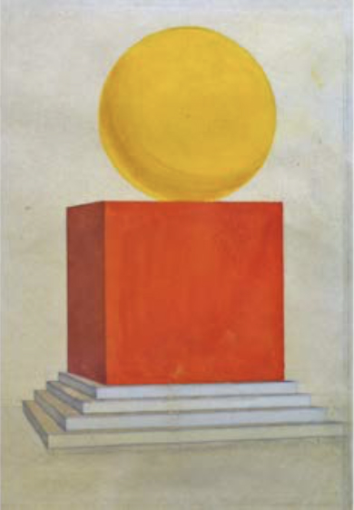

>

Анатолий Петрицкий. Милиционер и торговка. Эскизи костюмов к спектаклю “Футболист”. 1929.
Зміст
Частина 1
Витоки. До розпаду СРСР
РОЗДІЛ 1
ПОЧАТОК МОДЕРНІЗМУ. 1880-ТІ — 1917
Зміна художньої мови і пошук національного стилю
Модерн, сецесія, імпресіонізм
Початок авангарду. Кубофутуризм
Кверофутуризм
Салони Іздебського та одеські «незалежні»
РОЗДІЛ 2
УКРАЇНСЬКА РЕВОЛЮЦІЯ І «ЧЕРВОНИЙ РЕНЕСАНС». 1917 — ПОЧАТОК 1930-Х
Українська революція і створення Академії мистецтв
Культур-Ліга
Мистецтво й революційна агітація.
Вікна УкРОСТА і ЮгоЛЕФ Художній клімат 1920-х Війна спілок Олександр Богомазов: від кубофутуризму до «Пилярів» Василь Єрмілов і конструктивістський «Авангард»
у Харкові Панфутуристи, Михайль Семенко і «Нова генерація» Михайло Бойчук і його коло. Початок репресій
Вікна УкРОСТА і ЮгоЛЕФ Художній клімат 1920-х Війна спілок Олександр Богомазов: від кубофутуризму до «Пилярів» Василь Єрмілов і конструктивістський «Авангард»
у Харкові Панфутуристи, Михайль Семенко і «Нова генерація» Михайло Бойчук і його коло. Початок репресій
РОЗДІЛ 3
СТАЛІНІЗМ І КУЛЬТ ОСОБИ. ПОЧАТОК 1930-Х — 1953
Народження соцреалізму
На тонкій кризі. Кінець 1930-х
Друга світова війна. Опік реального
Сталінський грандстиль і післявоєнний поворот
до «бідермаєра» Народна альтернатива
до «бідермаєра» Народна альтернатива
РОЗДІЛ 4
МУЛЬТИКУЛЬТУРНА МОЗАЇКА. ЗАХІДНА УКРАЇНА ДО ТА ПІСЛЯ ВХОДЖЕННЯ ДО СКЛАДУ СРСР
Закарпатська школа живопису
Культурні герої на маргінесах імперій, епох і жанрів
Забуті імена міжвоєнного Львова
РОЗДІЛ 5
«ІНШЕ» МИСТЕЦТВО І ПІЗНІЙ СРСР.
1953-Й — КІНЕЦЬ 1980-Х Початок «відлиги». «Суворий стиль» Покоління 1960-х: дисиденти в політиці, неомодерністи
в мистецтві Співрозмовники. Київська неоавангардна орбіта Мозаїки, архітектура й монументи пізньорадянського модернізму 1970-ті — початок 1980-х: «тихе мистецтво», індивідуальні міфології та київський андеграунд «Художники Київського вокзалу». Гіперреалізм, хронореалізм і останнє радянське покоління Харківська школа фотографії Одеса: від нонконформізму до концептуалізму
1953-Й — КІНЕЦЬ 1980-Х Початок «відлиги». «Суворий стиль» Покоління 1960-х: дисиденти в політиці, неомодерністи
в мистецтві Співрозмовники. Київська неоавангардна орбіта Мозаїки, архітектура й монументи пізньорадянського модернізму 1970-ті — початок 1980-х: «тихе мистецтво», індивідуальні міфології та київський андеграунд «Художники Київського вокзалу». Гіперреалізм, хронореалізм і останнє радянське покоління Харківська школа фотографії Одеса: від нонконформізму до концептуалізму
Частина 2
МИСТЕЦТВО НЕЗАЛЕЖНОЇ УКРАЇНИ
РОЗДІЛ 1
НОВА ХВИЛЯ НА РУЇНАХ УТОПІЇ. КІНЕЦЬ 1980-Х — 2004
Дозволений ренесанс: трансавангард і народження
«Нової хвилі» «Вольова грань національного постеклектизму» Sex, drugs, contemporary art. Сквоти Куратор: від «смотрящего» до співучасника Львівська художня альтернатива Політичні перформанси «Живописний заповідник»: абстрактний вектор Закарпатський поптранс У пошуках Пана Геть від картини Одеський драйв Фотографія 1990-х: нова гостра соціальність Повернення до живопису
«Нової хвилі» «Вольова грань національного постеклектизму» Sex, drugs, contemporary art. Сквоти Куратор: від «смотрящего» до співучасника Львівська художня альтернатива Політичні перформанси «Живописний заповідник»: абстрактний вектор Закарпатський поптранс У пошуках Пана Геть від картини Одеський драйв Фотографія 1990-х: нова гостра соціальність Повернення до живопису
РОЗДІЛ 2
ПОКОЛІННЯ «ОРАНЖ». 2004–2013
Міленіум і його виклики
Галереї і медійні проекти міжчасся
Стихійний постмодернізм і повзуче шизобароко
Ерос політичного. «Оранж» як стиль
Мистецтво швидкого реагування: «Революційний Експериментальний Простір»
Група «Р.Е.П.». Зрілі проекти
Перезавантаження харківської школи: «SOSka»
Випробування гламуром. Постмедійна фігуративність
Поетика офісного планктону і херсонський арт-брют
Актуальні фріки й перформативний поворот
Мистецтво і вулиця
Хіпстери, соціальні мережі й фотографія потоку
Нові ліві vs нові праві
Інституції та їхні критики
РОЗДІЛ 3
МІЖ ВІЙНОЮ І РЕЙВОМ.
МАЙДАН 2013 РОКУ Й ПІЗНІШІ ЧАСИ Мистецтво на барикадах Посттравма Апостоли індивідуалізму. Привид великої форми Концептуальний дрейф Greater Ukraine. Номади з батьківщиною у смартфоні Жіночий реванш Поетика провінції і нова клубність Вперед у минуле. Час мислити ретроспективно Замість висновку
МАЙДАН 2013 РОКУ Й ПІЗНІШІ ЧАСИ Мистецтво на барикадах Посттравма Апостоли індивідуалізму. Привид великої форми Концептуальний дрейф Greater Ukraine. Номади з батьківщиною у смартфоні Жіночий реванш Поетика провінції і нова клубність Вперед у минуле. Час мислити ретроспективно Замість висновку